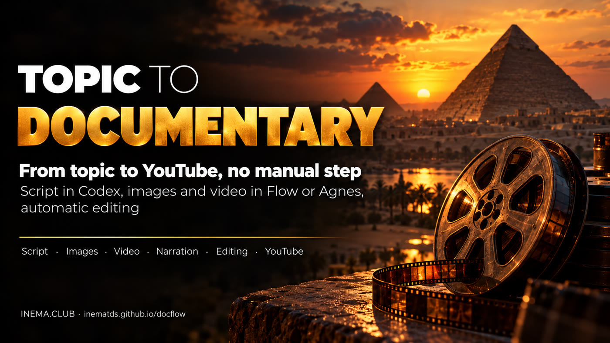
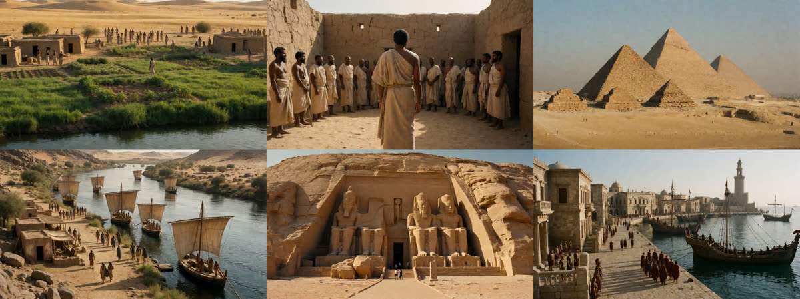
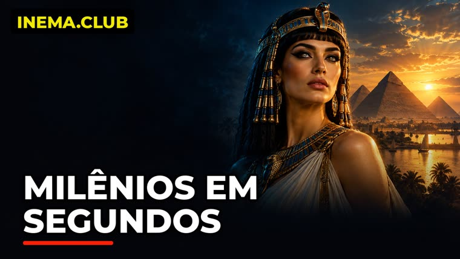

You write the topic in 6 lines. docflow handles the script, images, videos, narration, assembly and publishing.

docflow is a command-line tool that creates short narrated documentaries, the kind used on "dark" YouTube channels where nobody appears on screen. You answer 6 questions in a file (topic, style, duration, duration of each scene, format and references) and it does the rest: it writes the script, generates the images and videos for each scene, narrates, assembles everything with music and transitions, and publishes to YouTube. It automatically recreates a process that is normally done by hand in ChatGPT, Google Flow and CapCut. To use it, you need Linux with Python, ffmpeg and Codex.
The starting point was a dark-channel tutorial: GPT for the script, Google Flow for images and videos, AI Studio for the voice, Flow Music for the soundtrack, CapCut for assembly and manual upload. docflow runs the same steps on its own.
The same 6 questions from the tutorial, answered in a tema.yaml file. Codex (through your subscription) returns the script, narration, numbered image and video prompts, a music prompt, and the title, description and tags.
Image and video come from Google Flow (automated in the browser) or from the Agnes API (image and image→video, US$ 0). Narration, assembly and publishing are the same for both.
It fits each clip to the timing of the speech, adds a transition between scenes, a fade from black, ambient sound at 16% and music that ducks on its own when the voice speaks. Then it publishes through yt-pubx.
All of them can be repeated: they redo only what is missing. The material is stored numbered by scene in ~/projetos/output/docflow/<slug>/.
Google account. A robot (Playwright) opens Flow, pastes the prompt blocks into the agent, approves, requests the collection and downloads the zip. Written, not yet validated: the first login is still missing.
Images with agnes-image-2.1-flash and video with agnes-video-v2.0 (image→video), through the API, at zero cost. Tested: it made the example video.
No API: flux2-klein for images and image-with-motion for video. Not implemented yet.
docflow orchestrates tools that already exist. Check them before your first use.
Python 3 with PyYAML for the orchestrator and ffmpeg for assembly.
# check python3 -c "import yaml" ffmpeg -version
Writes the script through your subscription. The model can be changed with the DOCFLOW_CODEX_MODELO variable.
# check codex --version
inemavox running (port 8010) for narration, the Agnes client from videos-agnes and yt-pubx with the channel authorized. For the Flow engine: Node + Playwright.
# check ~/projetos/yt-pubx/yt-pubx canais
Real example: the video "Ancient Egypt in one minute", made with the Agnes engine.
Copy temas/egito.yaml and change the topic. 60 s of total duration with 10 s scenes gives 6 scenes.
slug: egito-antigo tema: "Ancient Egypt in one minute: from the Nile to the pyramids..." estilo: "realistic cinematic documentary, natural golden light" duracao_total: 60 duracao_cena: 10 formato: "16:9" motor: agnes # flow | agnes voz: nei thumb_cena: 3 # image used for the thumb canal: lives1
Script, images, videos, narration and assembly. In the example it took about 9 minutes.
./docflow tudo temas/egito.yaml # → ~/projetos/output/docflow/egito-antigo/final.mp4
If the video generator changes the era or the architecture of a scene, replace the clip with the image itself using a slow zoom and assemble again.
./docflow estatica temas/egito.yaml --cenas 6 ./docflow montar temas/egito.yaml
Title, description (with the footer for the project, the APIs used and INEMA.CLUB), tags and thumb. Nothing is uploaded in this step.
./docflow publicar temas/egito.yaml # dry-run
After watching the video and approving the thumb, upload it. To fix the description of a video that is already live, use descricao --video.
./docflow publicar temas/egito.yaml --enviar ./docflow descricao temas/egito.yaml --video https://www.youtube.com/watch?v=...
The robot opens a Chromium on the virtual display :99. You sign in to the Google account through VNC (localhost:5900) and accept the Flow terms. The first run calibrates the buttons, with a screenshot of each step in tmp/flow-*.png.
./docflow flow-login ./docflow gerar temas/egito.yaml --motor flow
6 scenes, 55 s, nei voice, Agnes engine. Published at youtube.com/watch?v=nOYaruP0gDs.


thumb_cena: 3).Version 0.2.0.